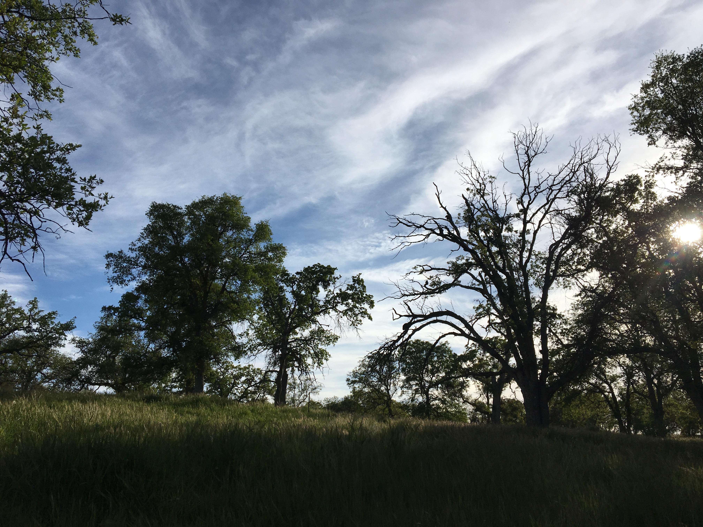
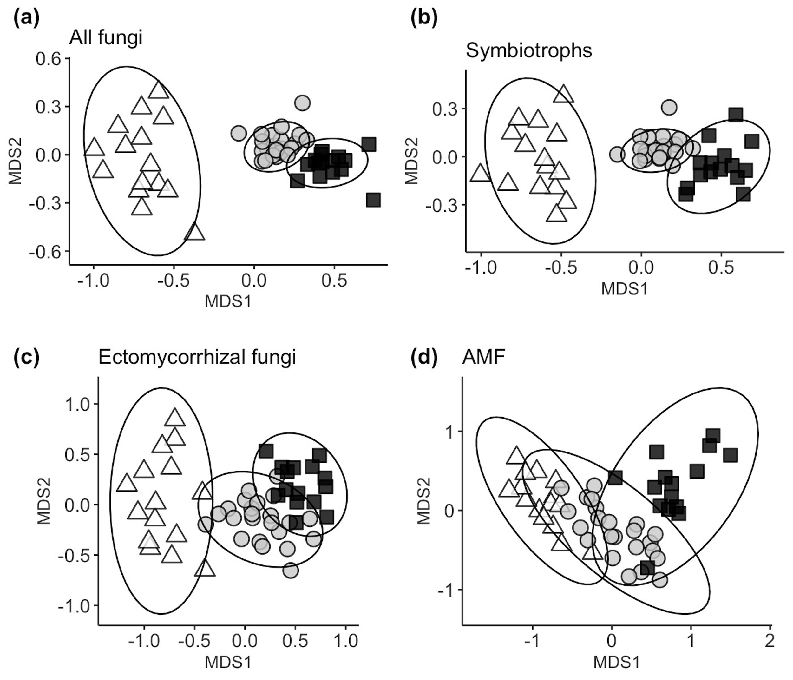

Soil fungal community composition and function in a changing climate

A large part of ecosystem function in woodland systems depends on soil fungal communities. However, global climate change has the potential to fundamentally alter these communities as fungal species are filtered with changing environmental conditions. Therefore, a fundamental question is: Will fungal communities continue to provide the same functions under the stress of climate change?
I had the privilege of being able to answer this question by working in unceded Kawaiisu territory, or the Tehachapi Mountains in south-central California with a collaborator, Dr. Devyn Orr. In this study, we examined the potential effects of climate on host-associated (i.e. tree-associated) soil fungal communities at climatically distinct sites, where more arid conditions represent likely regional climate futures. We found that soil fungal community composition changes strongly across sites, with species richness and diversity being highest at the most arid site.

However, host association may buffer the effects of climate on community composition, as host-associated fungal communities are more similar to each other across climatically distinct sites than the whole fungal community. Lastly, an examination of functional traits for ectomycorrhizal fungi, a well-studied guild of fungal mutualist species, showed that stress-tolerant traits were more abundant at arid sites than mesic sites, providing a mechanistic understanding of these community patterns. Taken together, our results indicate that fungal community composition will likely shift with future climate change but that host association may buffer these effects, with shifts in functional traits having implications for future ecosystem function.
Publications
Bui, A, D Orr, M Lepori-Bui, K Konicek, HS Young, HV Moeller. “Soil fungal community composition and functional similarity shift across distinct climatic conditions.” FEMS Microbiology Ecology. 2020.